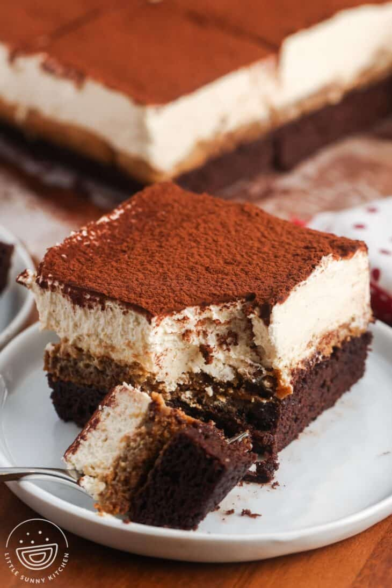

Tiramisu Browne

This 4-ingredient creamy pesto gnocchi dinner is a family-friendly vegetarian meal that you can whip up in just 15 minutes! Pillowy and tender gnocchi smothered in a creamy basil and dried tomato sauce. An easy comforting dinner that you’ll keep making over and over again!
Ingredients
- Brownies
- ▢ 4 tablespoons (56 g) unsalted butter melted and cooled
- ▢ ½ cup (100 g) granulated sugar
- ▢ ⅓ cup (75 g) light brown sugar
- ▢ 2 large eggs at room temperature
- ▢ 1 teaspoon (5 ml) pure vanilla extract
- ▢ ¼ teaspoon salt
- ▢ ½ cup (45 g) unsweetened cocoa powder
- ▢ ⅓ cup (40 g) all-purpose flour
- ▢ 1 teaspoon espresso powder
- Tiramisu Layer
- ▢ 12 ladyfingers savoiardi biscuits
- ▢ 1 cup (240 ml) hot brewed coffee
- Mascarpone Cream
- ▢ 8 ounces (225 g) mascarpone cheese
- ▢ 1 cup (240 ml) heavy whipping cream
- ▢ ½ cup (60 g) powdered sugar
- ▢ 2 teaspoons pure vanilla extract or 1 teaspoon vanilla bean paste
- ▢ 1 teaspoon instant espresso powder optional, for a stronger flavor
- Topping
- ▢ 1 tablespoon unsweetened cocoa powder for dusting
Preparation Steps
- Make The Brownies
- Preheat the oven to 350°F (180°C), or 320°F (160°C) for a fan oven. Grease and line an 8×8-inch (20×20 cm) baking pan with parchment paper.
- In a large bowl, whisk together the melted butter, granulated sugar, and brown sugar until smooth. Add the eggs, vanilla, and salt, then whisk until combined.
- Sift in the cocoa powder, flour, and espresso powder. Stir until just combined and no dry streaks remain.
- Pour the batter into the prepared pan, spreading it evenly. Bake for 15 minutes, or until a toothpick inserted in the center comes out with a few moist crumbs.
- Let the brownies cool in the pan.
- Assemble The Tiramisu Layer
- Pour hot coffee into a shallow bowl. Quickly dip each ladyfinger once on each side (do not oversoak), then arrange them in a single layer over the cooled brownies.
- Make The Mascarpone Cream
- In a bowl, beat or whisk the mascarpone cheese until smooth.
- In a separate bowl, beat the heavy whipping cream, powdered sugar, and vanilla extract (plus optional espresso powder) until soft peaks form. Be careful not to overwhip.
- Gently fold the whipped cream into the mascarpone until smooth and creamy.
- Assemble & Chill
- Evenly spread the mascarpone mixture over the ladyfinger layer.
- Cover with plastic wrap and refrigerate for at least 2 hours to set.
- Serve
- Before serving, sift a thin layer of cocoa powder over the top. Slice into squares and serve.
Home